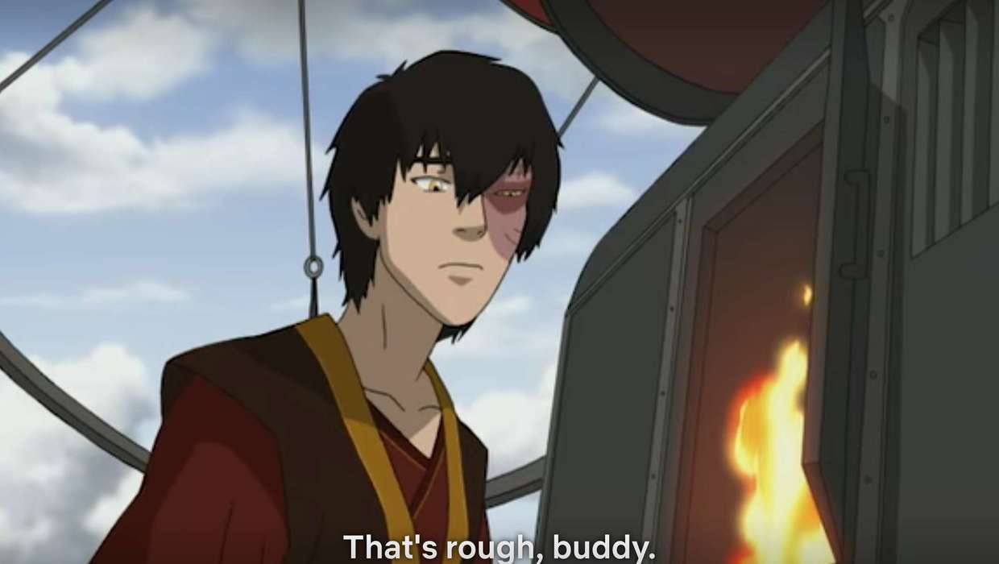

Who is Prince Zuko?
Zuko is a firebending master, born as a prince in the Fire Nation Royal Family, who reigned as Fire Lord from 100 AG until his abdication in 167 AG. Originally the primary enemy of Team Avatar, Zuko devoted three years to trying to capture the long-lost Avatar to end his banishment and regain his honor as Crown Prince of the Fire Nation. He is recognizable by the distinctive burn scar on the left side of his face from his eyebrow to his cheek, which was given to him by his father, Fire Lord Ozai, shortly before his banishment as a result of an incident in which he unintentionally disrespected his father by speaking out of turn and refusing to duel him. He also undergoes one of the best character arcs in television history.
Zuko's friends<3
- Uncle Iroh
- uhhh that's about it
- He later joins team Avatar doe